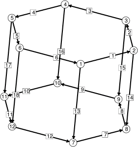

r = (1/a)cosh(az)。
在 cat.fe 文件中，上下两个圆环都定义为单参数
边界线。分离距离和半径都是参数，因此
您可以在运行过程中通过赋值语句或
A 命令来更改它们。
给定的初始半径是对于给定圆环间距悬链面能够存在的
最小值。要获得稳定的悬链面，您
需要增大这个值。然而，如果您使用
原始值运行，您可以看到颈部逐渐收缩。
初始表面
由六个矩形组成，形成两个圆环之间的圆柱体。
边界上的顶点是固定的，否则它们会沿着边界滑动
以减小曲率；两个直径比一个周长更短。边界边也是固定的，这样
细分边产生的顶点同样固定。
|
 |
初始悬链面骨架，带 顶点和边的编号。 |
// cat.fe // 悬链面的 Evolver 数据。 PARAMETER RMAX = 1.5088795 // 高度对应的最小半径 PARAMETER ZMAX = 1.0 boundary 1 parameters 1 // 上圆环 x1: RMAX * cos(p1) x2: RMAX * sin(p1) x3: ZMAX boundary 2 parameters 1 // 下圆环 x1: RMAX * cos(p1) x2: RMAX * sin(p1) x3: -ZMAX vertices // 用边界参数给出 1 0.00 boundary 1 fixed 2 pi/3 boundary 1 fixed 3 2*pi/3 boundary 1 fixed 4 pi boundary 1 fixed 5 4*pi/3 boundary 1 fixed 6 5*pi/3 boundary 1 fixed 7 0.00 boundary 2 fixed 8 pi/3 boundary 2 fixed 9 2*pi/3 boundary 2 fixed 10 pi boundary 2 fixed 11 4*pi/3 boundary 2 fixed 12 5*pi/3 boundary 2 fixed edges 1 1 2 boundary 1 fixed 2 2 3 boundary 1 fixed 3 3 4 boundary 1 fixed 4 4 5 boundary 1 fixed 5 5 6 boundary 1 fixed 6 6 1 boundary 1 fixed 7 7 8 boundary 2 fixed 8 8 9 boundary 2 fixed 9 9 10 boundary 2 fixed 10 10 11 boundary 2 fixed 11 11 12 boundary 2 fixed 12 12 7 boundary 2 fixed 13 1 7 14 2 8 15 3 9 16 4 10 17 5 11 18 6 12 faces 1 1 14 -7 -13 2 2 15 -8 -14 3 3 16 -9 -15 4 4 17 -10 -16 5 5 18 -11 -17 6 6 13 -12 -18边界定义中的参数始终是
p1（双参数边界中是 p2）。
Evolver 可以处理周期性参数化，
正如本示例中所做的那样。
尝试以下命令序列
（在方便时显示）：
r （细化以获得粗糙但可用的三角剖分）
u （等角化使三角剖分更好）
g 120 （需要这么多次迭代才能使颈部坍缩）
t 0.05 （通过消除所有长度短于 0.05 的边
将颈部坍缩为单个顶点）
o （分裂颈部顶点以分离上下表面）
g （尖刺坍缩）
悬链面展示了演化的一些微妙之处。假设
初始半径设置为 RMAX = 1.0，初始高度设置为
ZMAX = 0.55（这些在 catman.fe 中预设）。
使用优化比例因子进行五十次迭代后，面积为 6.458483。
此时，每次迭代仅减少面积 0.0000001，
三角形都接近等边，一切
看起来良好，天真的用户可能会认为表面已经非常接近其最小值。但这实际上是能量的鞍点。
进一步迭代表明，每次迭代的面积变化在大约第 70 次迭代时达到最低点，
到第 300 次迭代时面积降至 6.4336。
三角剖分实际上希望扭曲，使得有边
沿着曲率线（即垂直子午线和
水平圆）延伸。因此最优三角剖分似乎是
带对角线的矩形。
可以通过使用
U
命令开启
共轭梯度
方法来加速演化。
使用 catman.fe，尝试脚本 "r; u; U; g 70"。
对于共轭梯度行家，
鞍点展示了 Fletcher-Reeves
和 Polak-Ribiere 版本共轭梯度之间的区别。鞍点
似乎使 Fletcher-Reeves 版本感到困惑（它曾经是默认值）。
然而，Polak-Ribiere 版本（当前默认值）几乎没有问题。
U
命令切换共轭梯度的开关，而
ribiere
切换 Polak-Ribiere 版本。
使用 Fletcher-Reeves 共轭梯度时，
鞍点在第 17 次迭代时达到，面积再次开始减少
直到第 30 次迭代，达到 6.4486。但随后迭代停滞，
必须关闭并重新开启共轭梯度模式以
清除历史向量。重新启动后，再进行 20 次迭代将
面积降至 6.4334。
在 Polak-Ribiere 模式下，不需要重新启动。
读者练习：让 Surface Evolver 显示一个不稳定的
悬链面，方法是将悬链面的面声明为某个体的边界，
并使用
b
命令调整该体的体积以获得零压力。
参见示例数据文件 catbody.fe。